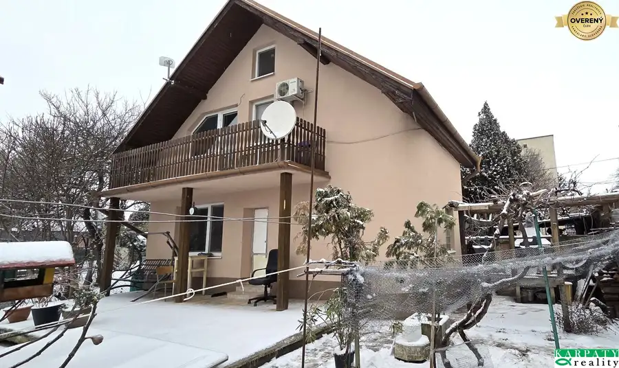
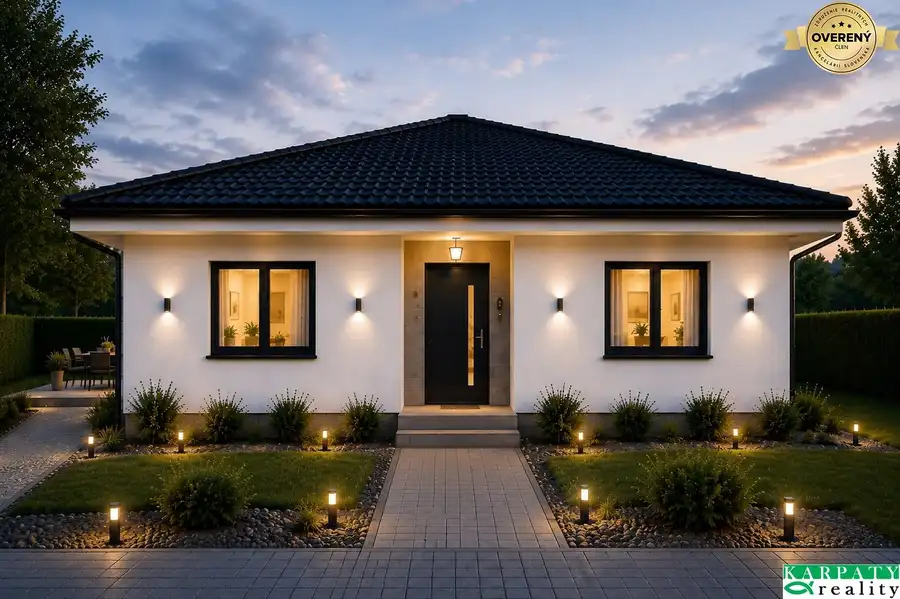
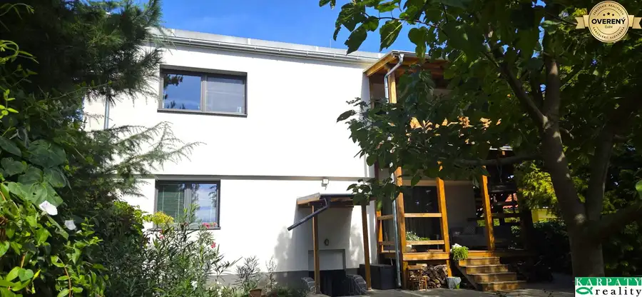

Na predaj zánovný, útulný rodinný dom, Šurovce
Šúrovce
- Dispozícia2,5
- Plocha150 m²
- Stavpôvodný
O nehnuteľnosti
Exkluzívne u nás ponúkame na predaj zánovný 17 ročný rodinný dom v Šúrovciach. Dom bol postavený v roku 2008 z itongu a leží na 350 m2 pozemku. Zastavaná plocha domu je 80 m2 zastavaná plocha garáže je cca 40 m2. Momentálne je dom 2,5 izbový s možnosťou na poschodí dobudovať ďalšie dve miestnosti a sociálne zariadenie. Vstup do domu je z prestrešenej terasy na chodbu odkiaľ je možný vstup do všetkých častí domu. V dome je veľká presvetlená kuchyňa spojená s obývacou izbou. Z chodby sa vstupuje aj do veľkej kúpeľne s dvoma umývadlami, novým veľkým sprchovacím kútom a oddelenou toaletou. Z chodby je takisto vstup do spálne a z tej do ďalšieho priestoru, ktorý je v súčasnosti využívaný ako veľký šatník s dvoma vstavanými skriňami, avšak tento priestor sa dá prerobiť aj na malú detskú izbu alebo pracovňu. V vstupnej chodbe je taktiež schodište do rozsiahleho podkrovia, kde je už predpríprava na zobytnenie, vybudovanie sociálneho zariadenia, (rozvody vody a kanalizácie). Taktiež je možné na podkroví s nízkymi nákladmi (sadro-kartónové priečky) vybudovať ďalšie dve veľké samostatné izby. Na podlahách v celom dome je dlažba, pod ktorou je zabudované elektrické odporové vykurovanie a v každej izbe je ovládanie termostatmi. Vykurovanie je taktiež zabezpečené krbovou pieckou v obývačke. V celom dome sú drevené eurookná a oblôžkové zárubne a dvere, a taktiež vstupne dvere sú „euro-dvere“. Prestrešená terasa pri vstupe je vo veľkosti 9m2. Okolo domu sú vybudované chodníky zo zámkovej dlažby. Hneď vedľa domu je rozsiahla garáž o veľkosti 40m2, vhodná na parkovanie 2 aut (aj väčších rozmerov). Vstupná brána do garáže je elektricky ovládateľná. V zadnej časti garáže je priestor pre umiestnenie malej dielne, prípojka elektriny 230/400V. Taktiež je zadná časť garáže podpivničená vo veľkosti cca 10 m2. Za garážou je prístrešok so železnou konštrukciou a lexanovou strechou na uskladnenie dreva, náradia a pod. Pozemok je oplotený drôteným plotom, vstupná brána je posuvná. Dom sa predáva čiastočne zariadený. Projektová dokumentácia je k dispozícii.
Obec ponúka širokú infraštruktúru, nachádza sa tu:
- obvodný lekár,detská lekárka, lekáreň,zubár
- škola, škôlka
- viacero potravín, reštaurácie
- futbalový štadión, cyklotrasy
- kostol
- benzínka
Výborné umiestnenie obce je v dostupnej blízkosti 3 miest:
- Hlohovec 13 km
- Sereď 7 km
- Trnava 15 km
Nová cena tohto šikovného domu je 214000eur.
V prípade záujmu kontaktujte Ing. Peter Karcol, , karpatyreality.sk
Parametre
| Zastavaná plocha | 120 m² |
|---|---|
| Úžitková plocha | 150 m² |
| Počet poschodí | 1 |
| Počet izieb | 2,5 |
| Stav | pôvodný |
| Odvoz odpadu | áno |
| Voda | verejný vodovod |
| El. napätie | 230/400V |
| Plyn | nie |
| Kanalizácia | áno |
| Internet | TV káblový rozvod |
| Kúpeľňa | sprchovací kút |
| Vykurovanie | vlastné - elektrické |
| Terasa | áno |
| Pivnica | áno |
| Garáž | áno - 2 autá |
| Parkovanie | vonkajšie |
| Inžinierske siete | áno |
| Postavené z | Ytong |
| Zariadenie | zariadený |
| Krb | áno |
| Energetický certifikát | nie |
| Okná | drevené |
| Terén | rovina |
| Prístupová cesta | asfaltová cesta |
| Dátum zverejnenia | 10. 9. 2025 |
Kde to je
Mohlo by Vás zaujímať

Rodinné domy10 528 000 €Na predaj 2 rodinné domy vhodné na bývanie i podnikanie, Trnava! Trnava 5-izbový550 m² V prednej časti pozemku, priamo od ulice, sa nachádza starší rodinný dom z roku 1973 so zastavanou plochou 127 m² a úžitkovou plochou do 300 m². Dom…
Rodinné domy6 320 000 €Na predaj 4 izbový bungalov, Horné Pole, Zvončín! Zvončín 4-izbový123 m² Ponúkame na predaj novostavbu rodinný dom 4 izbový bungalov. Dom je v štádiu projektu. Pozemok sa nachádza v obci Zvončín – Horné pole. V ponuke sú 2…
Rodinné domy10 479 000 €Na predaj rodinný dom s 2 bytovými jednotkami Modranka - Trnava! Modranka 7-izbový200 m² Exkluzívne u nás ponúkame na predaj priestranný 2-generačný rodinný dom v Trnave – Modranke, ktorý je ideálnou voľbou pre viacgeneračné bývanie,…